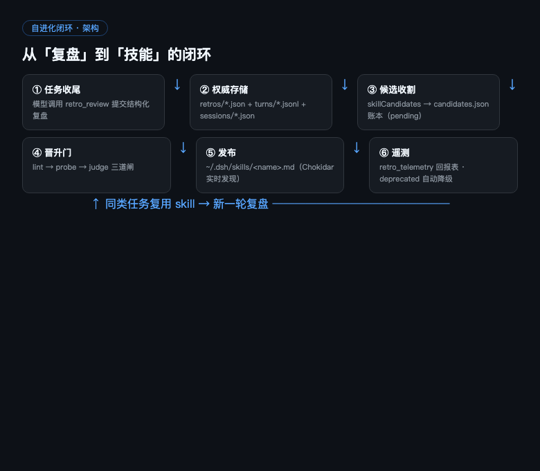
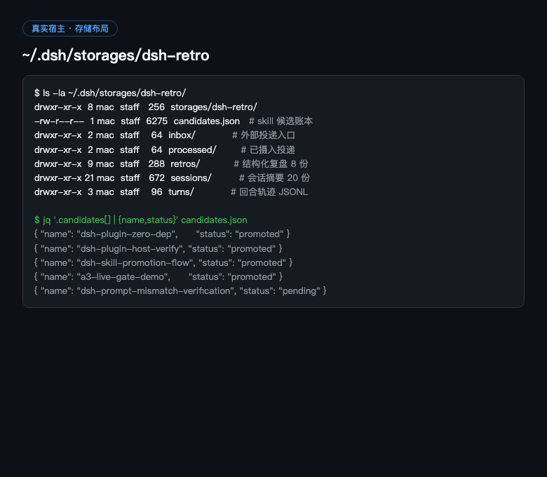
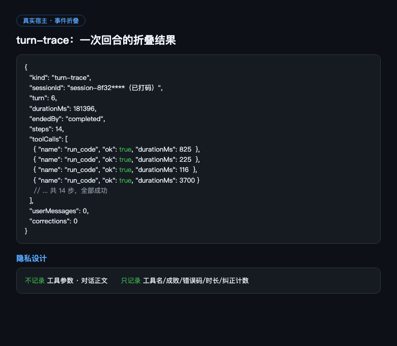
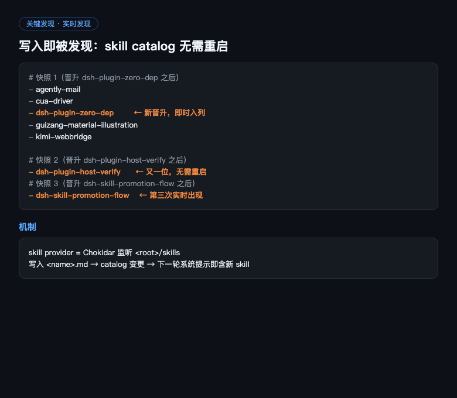
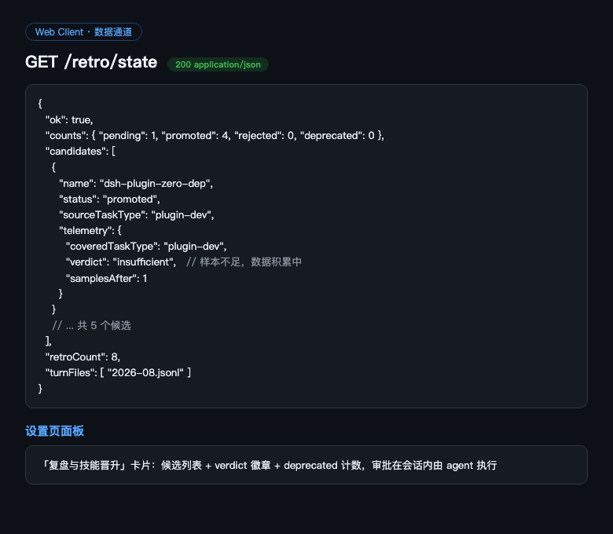
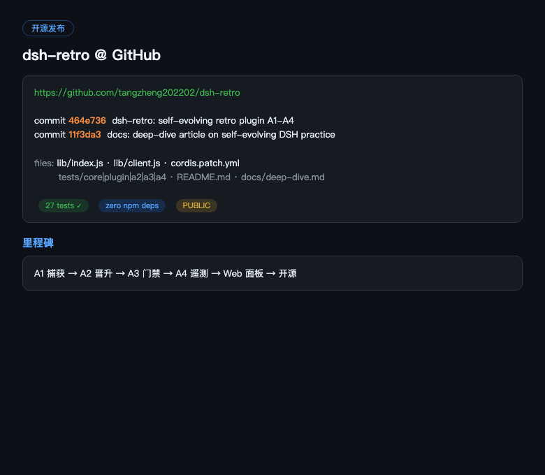

大模型的能力边界由权重决定，但上限之外的增量，几乎全在系统层：工具、记忆、技能、验证回路、长任务编排。这篇文章记录我如何把一个开源 Harness 从「聊天工具」养成了一个「会自我进化的操作系统」——复盘、技能晋升、门禁、遥测，全部落地成真实代码，并跑通了真实宿主验证。
DeepSeek Harness（DSH）的架构事实是「一切皆插件，没有特权内核」——模型适配器、工具注册表、会话日志、agent loop 本身都是可替换的插件。扩展它不是 fork 内核，而是写插件挂到扩展点上；卸载即撤销，零残留。
它天然为自我修改设计：因为扩展点是可逆副作用，一个 agent 完全可以让系统自己写插件、挂载、测试、回滚。
| 层级 | 名称 | 完成标志 |
|---|---|---|
| L0 | 静态助手 | 单轮问答 |
| L1 | 工具型 agent | 能闭环执行任务 |
| L2 | 记忆型 agent | 跨会话复用经验 |
| L3 | 复盘型 agent | 任务结束自动产出经验 |
| L4 | 自改进 agent | 修改自己的 skill/prompt，过验证门生效 |
| L5 | 元进化 | 进化出进化能力本身 |
更重要的是一条双飞轮：本机能进化的是外脑资产（skill / 插件 / 记忆），权重进化在训练侧；而 Harness 产生的高质量轨迹数据可以回流训练——harness 是模型进化的数据工厂，模型是 harness 的大脑。

监听 session 事件流，把 turn / step / tool / user 事件折叠成结构化轨迹——不记工具参数、不记对话正文，只记工具名、成败、错误码、时长、纠正计数。隐私优先。


复盘里的 skillCandidates 自动收割进账本（去重、带完整出处、状态机 pending→promoted/rejected）。晋升过 lint 门后写入技能目录。
关键发现：DSH 的 skill provider 用文件监听——写入即被发现，skill catalog 实时更新，无需重启。四次真实晋升，四次都在下一轮会话的可用技能列表里即时出现。

晋升门升级为三道闸：lint（机械检查）→ probe（真实试跑，failed 阻止晋升）→ judge（独立裁判意见必填：verdict=pass + 证据）。账本完整记录审计链。
retro_telemetry 生成「skill 投资回报表」：按 skill 覆盖的任务类型聚合晋升前后的会话质量（工具失败率 / 用户纠错率），verdict=healthy / deprecated / insufficient。恶化的 skill 自动降级标记（不删文件，可追溯）。
诚实说明：DSH 目前没有「skill 被加载」事件，A4 用的是代理指标——衡量任务类型前后的质量变化，而非真实调用次数。样本积累中，多数 verdict 暂为 insufficient，这是数据阶段而非缺陷。
宿主注册 /retro/state 数据通道，设置页挂「复盘与技能晋升」卡片；审批写操作留在会话内由 agent 执行。

边界：能进化的不是权重，是外脑资产；进化必须可测试、可回滚、可积累。三层门禁就是「自我修改」的护栏。
下一步：让复盘提交成为习惯，样本量上来后遥测判定才有统计意义；等待 skill 加载事件以升级真实遥测；推进进化门控的自动回滚；最后把轨迹数据管道接到训练侧，闭合双飞轮。
